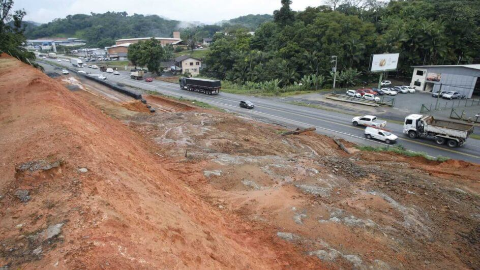
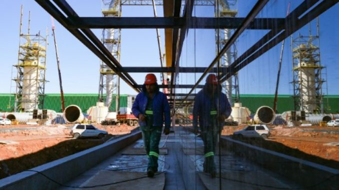
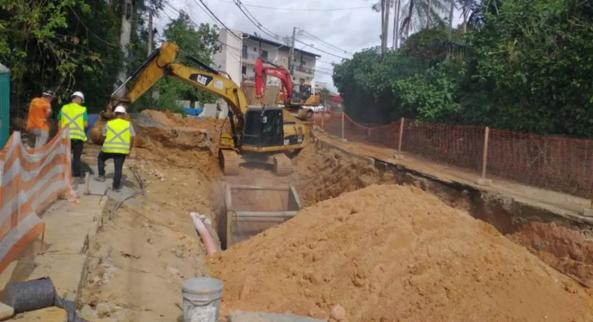

Home
Empregos
Currículos
Classificados
Blog
Notícias

BR-470/SC será interditada nesta quarta-feira (20/09) em Blumenau
Prefeitura de Blumenau abre agenda de vacinação contra a Covid-19

Santa Catarina tem quase 6,5 mil vagas abertas pelo Sine, Blumenau mais de 700

Saiba até quando deve ir as obras na rua Divinópolis, em Blumenau